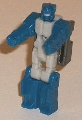
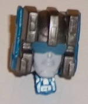
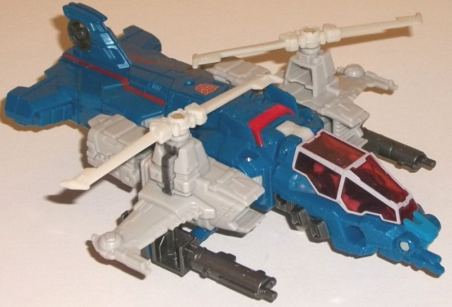
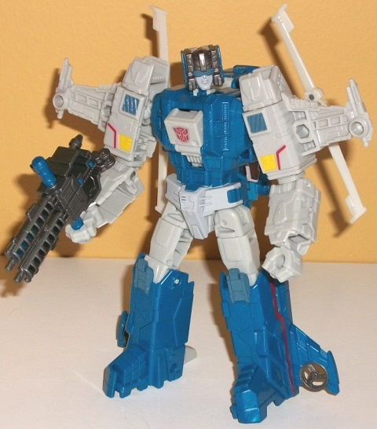

Allegiances
: Autobot
Size
: Deluxe
Difficulty of Transformation
: Easy
Color Scheme
: Light pale gray, moderately
dark milky semi-metallic blue, and some yellow, red, metallic gunmetal
gray, silver, transparent cherry red, and glossy dull dark greenish blue
Rating
: 7.7


Highbrow's Headmaster
Gort becomes his Titan Master Xort for this line. Highbrow shares just
a FEW pieces with
Titans Return Scourge
, but
the Titan Master is actually
mostly
the same as far as pieces go.
In robot mode, Xort has the same mold detailing as Scourge's Titan Master
Fracas, but with a different head. Honestly, though, the head is so minimally
different I don't really think it's worth the new mold detailing-- the
new head still has the visor, the silver mouth, and a very similar helmet
when compared to Fracas. The top of the head is a little rounder on Xort,
but that's about it as far as the mold detailing goes. Highbrow's basic
color scheme of moderately dark semi-metallic blue and light pale gray
is present on Xort, with the main body and upper legs a light pale (blah)
gray and the rest blue plastic. The colors contrast each other decently
enough, but beyond the silver face there is NO paint detailing in this
mode, which is just a shame compared to the paint on the Wave 1 deluxe's
Titan Masters. Given that he's a slight remold of Fracas, of course Xort
has the same articulation as Fracas (i.e. your normal Titan Master figure).
In head mode Xort is a great update of Highbrow's G1 head, with three rectangular
details on the helmet, small blocks on the sides of his head, and a dull
dark greenish blue visor with a light gray face. It's very well-detailed,
and I love all the gunmetal gray. That said, Highbrow's head design is
not really unique at all and blends in with a lot of the latter-G1 toys
in terms of face design, so I can't say it's anything spectacular.


Highbrow's vehicle mode
is a futuristic osprey helicopter, again mostly a more-detailed, more well-proportioned
version of his G1 toy. In general this mode looks pretty good, with two
exceptions. The first, and the most obvious, is that the lower arms are
pretty darned obvious on the sides behind the propellers. Granted, they
peg in well enough and stay in place, but the sides of helicopters don't
really look like that, with those big rectangular bumps behind the rotors.
There's also a definite gap in between the arms and the main body of the
helicopter, which only makes this worse. On a slightly lesser note, the
rear section is too fat, with the top rotor tailfin ridiculously small.
However, the helicopter wings (minus the arms) do look pretty good, with
two-pronged propellers on the top that can each rotate freely. The cockpit
section looks exceptionally good, with a nice long, semi-futuristic-looking
nosecone with asymmetrical guns on the front and a transparent cockpit
that Xort or another Titan Master can sit in. Highbrow comes with two guns
that can plug in below the wings and have landing gears molded onto the
bottom-- if you stick those in right and unfold the small landing gear
underneath the cockpit, you can keep Highbrow level in this mode. (That
said, if you take both guns away and fold up the landing gear, he's pretty
level, too.) The mold detailing is exquisite on this toy, with little robotic
details everywhere-- from vents to circuitry details to little robotic
circular bumps and panels-- pretty much every square inch of this mode
is covered in mold detailing. (In fact, it's almost TOO much, particularly
on the sides-- if just a teensy bit less mold detailing was present, I
wouldn't have complained.) Highbrow's basic color scheme is a nice shade
of milky semi-metallic blue, as well as light pale gray (not milky, thankfully,
so even though it's not exciting it looks like an actual painted gray on
a helicopter and not just a bland shade). The two colors contrast against
each other fairly well, but it's not exactly the most exciting color scheme.
The bits of red do make it pop a little, though-- there's some red angular
stripes on the top of the rear section, along with some red on the top
of the main body and a REALLY nice transparent cherry red used for the
cockpit windows. Bordering this cherry red with the light pale gray is
my favorite part color-wise of this toy-- it just looks really spiffy.
There's also a fair amount of metallic gunmetal gray paint-- the guns are
coated in it, and there's also a bit on the sides of the wings below the
propellers, on the rear rotor, and on the bottom rear portion of the nosecone.
Thus, overall the colors are broken up a pretty good amount in this mode.
As far as weapon ports, beyond the aforementioned one under each wing there's
also another one under each wing further towards the end, along with a
port on each side of the cockpit. Oddly, even though he's a Titans Return
deluxe, Highbrow has no little pegs on him for Titan Masters to stand on
in this mode.
Highbrow's transformation
is very straightforward-- the sides becomes the arms, the cockpit flips
behind the back, and the legs split in half from the back section and extend
downwards a bit. I've heard people say Highbrow is a "remold" of TR Scourge,
but he's really not-- he just shares a few minor parts, namely the upper
legs and an interior piece that is used for transformation to pull out
the legs. EVERYTHING else is changed (beyond the shared bits between the
Titan Masters I've already talked about). He's a new toy. Because his transformation
is quite basic, his structure is as well, but it's a pretty solid "basic
robot" structure with solid proportions all around. There are a few bits
of kibble-- namely the rotors behind the upper arms, which can't fold up
or away or anything. The helicopter nosecone is behind Highbrow's back,
but it stays out of the way of articulation and for the most part visually,
so this is a very minor downside. Yes, he also has the helicopter wings
sticking out the sides of the upper arms, but I think this helps make him
look a bit more individualistic, so I don't mind them much-- they're not
huge or anything. The mold detailing continues to be stellar in this mode,
with little circuitry and spring details on the waist and main body. The
main section of the chest even folds out slightly for no reason other than
to mimic the Headmaster gimmick slightly from the original G1 toy. There's
also some nice yellow, glossy dull greenish blue, and red details on the
upper arms, which look quite nice. I do wish there was a bit more paint
on his main body beyond just his waist, but otherwise his colors are broken
up fairly well in this mode, with the light gray more prevalent here than
in vehicle mode. Unfortunately like Scourge, the Titan Master head connection
is a little bit loose so his head can "jiggle around" slightly in its socket,
though it doesn't come undone. For articulation, Highbrow can move at the
neck, shoulders (at two points), elbows (at two points), side-to-side at
the wrists, and at the hips (at three points) and knees. Thus, except for
waist articulation he's pretty poseable. Both of his guns can also combine
into a single double-barreled gun with pegs in it to allow a Titan Master
to stand near the back of the gun, which is a nice little extra.
Highbrow isn't bad by
any means, but there isn't anything particularly unique or spectacular
about him, either. He's very straightforward in both modes, his color scheme
is okay but not particularly great, and there's a few odd proportional
issues in his helicopter mode. Still, he's got a lot of excellent detailing,
great proportions in robot mode, and is a solid update of the G1 character.
If you like the character/design and want an update, this will meet your
expectations, but don't expect anything mind-blowing.
Reviews by Beastbot